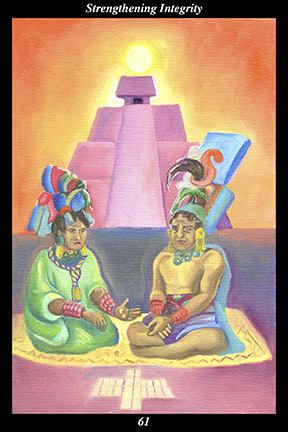

 | IMAGE A female warrior and a male warrior are seated on a woven reed mat. Behind them, the sun hangs suspended above a great pyramid. Their bearing and clothing show that they are people of great dignity and merit. They are jointly seeking advice from the creators and ancestors by consulting the divinatory instrument drawn on the ground before them. |
INTERPRETATION
This hexagram depicts the way for allies to strengthen the warrior’s spirit in one another. The union of the female warrior and the male warrior symbolizes an alliance between individuals whose natures are complementary and mutually reinforcing. That they are seated together on the woven mat indicates that their alliance is based on a shared vision. That they are seated in front of the sunlit pyramid means that they acknowledge that they are descendants of great warriors who have gone on to live forever in the house of the sun. That they comport themselves as people of great dignity and merit means that they dedicate their lives to making both their ancestors and descendants proud. That they seek advice from the creators and the ancestors by consulting the divinatory instrument before them means that they honor and fulfill the ancient covenant between the visible and the invisible. Taken together, these symbols mean that you align yourself with others in order to transform your weaknesses into strengths.
ACTION
The masculine and feminine halves of the spirit warrior vigilantly treat one another with the respect, courtesy, and authenticity accorded great warriors. The skills and the knowledge of the old ways are of little value if they are not applied to present-day circumstances: in this sense, spirit warriors create relationships with one another in order to train themselves to live a balanced and harmonious way of life with the utmost integrity. As in every relationship, there are those who lead and those who follow—but among spirit warriors, these roles are extremely fluid and change constantly. One takes decisive action and another goes along, providing the utmost support. One moves in an indirect manner to increase harmony and good will, and another gives up the need for identifiable goals and concrete solutions. One challenges and another nourishes. One opens to new experiences and another gives up the need to control change. One takes on the role of the masculine half, another the role of the feminine half. One takes on the role of the feminine half, another the role of the masculine half. Back and forth, exchanging roles constantly, such allies face circumstances as a united front: moving along with things when appropriate, creating resistance to things when appropriate, they use circumstances to train themselves to apply the old ways with honor, sincerity, and integrity. Because you make yourself such an ally, you find such allies and bring great
benefit to all.
INTENT
What is difficult is to live the life of a spirit warrior all alone. Without relationships that support our goals, reinforce our values, and provide us complementary companionship, it is easy to give up our vision and accept a less demanding way of life. If we look around us for examples of how to live, we are sure to be drawn into a materialistic and self-centered way of life since other spirit warriors do not shout their presence. If we merely aim to conform to our surroundings, we are sure to drift into the orbit of something or someone seeking to use us for their own purposes. If, on the other hand, we align ourselves with allies striving to sustain the continuity of the old ones’ vision of a balanced and harmonious way of life, we are sure to live the life of a noble and immortal spirit who has entered this realm in order to advance the great work of universal metamorphosis.
SUMMARY
Treat everyone as if they have a wise and immortal teacher within—and see everything they do as the teacher’s subtle strategy for testing the depth of your perceptions. Treat everyone with respectful intimacy, avoid informal familiarity. Treat everyone like a great warrior armed with spear and shield, don’t try to read others’ minds. The relationships you cultivate now will endure forever.
THE LINE CHANGES
1° Insincerity abounds and people use one another without conscience, insecurity abounds and people take offense without giving others the benefit of the doubt. Make yourself the kind of person you want for a lifelong friend. Act from the heart and new allies will find you.
2° A strong relationship has many ups and downs over the course of its life and many people leave as soon as difficulties begin, hoping to find something more perfect. Steadfastness means holding together against tide and time. If you don’t grow old together, you grow old alone.
3° Your reputation will suffer if you continue siding with this faction and your hopes for advancement will not come to pass. When the choice is between imperfect but sincere superiors and passionate but opportunistic peers, you must choose the former. Make a clean break right away.
4° You have the skills needed to advance the goals of those above—place yourself in their service and they will further your own goals. These are honorable souls who can be trusted to treat all in a beneficial manner. Learn from them that truly successful people do not speak of success.
5° Success isolates people, making them suspicious of others’ motives and protective of their real thoughts. Reach across the social spectrum to keep your heart young, your spirit laughing, and to make friends from all walks of life. Learn from them that intimidation just strengthens your enemy.
6° The leadership of this group is not living the kind of life they are espousing. Look through the talk and posturing and you will find empty costumes. Truly beneficial people do not act like this—they are open, straightforward, and plain spoken. You have nothing to learn from these people.